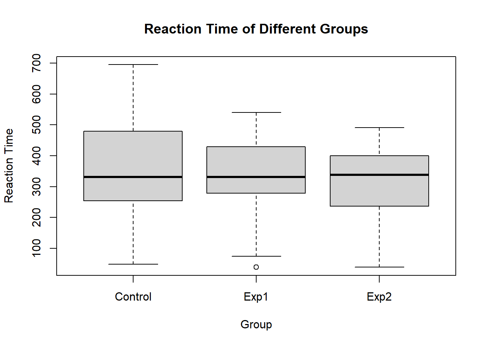

Chapter 4 认识数据
rt <- read.csv("./data/rt.csv", header = T)
str(rt)## 'data.frame': 40 obs. of 4 variables:
## $ Subject: chr "S1" "S2" "S3" "S4" ...
## $ Group : chr "Exp1" "Exp1" "Exp1" "Exp1" ...
## $ Gender : chr "Male" "Male" "Female" "Female" ...
## $ RT : int 540 263 336 298 436 398 295 326 39 74 ...这个str（structure）是一个函数，可以让我们看到整个数据的结构。 从rt的数据结构上来看40个观测值（这里是被试），4个变量。
- Subject是称名变量，表示被试编号
- Group是称名数据，表示实验分组：有实验组1（Exp1），实验组2（Exp2）和控制组（Control）
- Gender是称名数据，表示被试的性别：男（Male）与女（Female）
- RT是等比数据，表示反应时，单位是毫秒（ms）
数据读入到R中之后，是以数据框（Data Frame）的形式保存在“Environment”之中。“Environment”中可以保存许多个数据框（Data Frame）。点击“Environment”下边的“Save workspace as”按钮，所有读入到RStudio的“Environment”中的数据可以以“.RData”的格式保存在我们的计算机上。采用这种方式保存数据，下次打开RStudio，你会有意想不到的惊喜，你会发现上次读入到RStudio中的数据还在（当然每次你的数据发生了改变，都不要忘了保存，即点击“Save workspace as”按钮）。
那我们如何访问读入到R中的数据呢？ 在数据框（Data Frame）中，每一行是一个观测值，每一列是一个变量。通过行与列的位置，我们就能找到数据框中的每一个数值。 例如，我们想知道被试S25的反应时：
rt <- read.csv("./data/rt.csv", header = T)
rt$RT[rt$Subject == "S25"]## [1] 120需要注意的，我们在获取被试S25的反应时时，是先将所有被试的反应时取出来了，然后再从所反应时中，找到S25的反应时。这是因为，我们在获取某一列（或某个变量）数据时，可以用数据的变量名+“$”+列名（rt$RT）。
那们要看被试S25所有的数据（如，S25是哪一个实验组的，其性别是什么，以及其反应时是多少）呢？
rt <- read.csv("./data/rt.csv", header = T)
rt[rt$Subject == "S25",]## Subject Group Gender RT
## 25 S25 Control Female 120因为数据框有两个维度：行和列。我们获得某一行的数据时，不能使用获取列数据同样的方式。但是，我们可以通过在数据框的变量名（如rt）后面加上方括号（[]）的方式来获得行数据。在方括号中，行和列用英文输入法下的逗号隔开（,），逗号前边表示行，后边表示列。 - 在获取某一行数据时，我们可以使用表示该行的唯一标识值（如被试编号），除非我们想获得多行数据； - 在获取某一列数据时，除了以上介绍的方法，还可以在方括号的逗号后边加入该列的表头（变量名）；如果想获得多列数据，可以使用向量函数，将多列的表头（变量名）生成一个向量。
请看下面的例子：
rt <- read.csv("./data/rt.csv", header = T)
#获取第25行数据
rt[25, ]## Subject Group Gender RT
## 25 S25 Control Female 120#获取第21至25行数据
rt[21:25, ]## Subject Group Gender RT
## 21 S21 Exp2 Male 379
## 22 S22 Exp2 Male 464
## 23 S23 Control Male 254
## 24 S24 Control Male 329
## 25 S25 Control Female 120#获取被试S21、S22、S23、S24和S25的数据
rt[rt$Subject == c("S21", "S22", "S23", "S24", "S25"), ]## Subject Group Gender RT
## 21 S21 Exp2 Male 379
## 22 S22 Exp2 Male 464
## 23 S23 Control Male 254
## 24 S24 Control Male 329
## 25 S25 Control Female 120#获取Group和RT两列数据
rt[ , c("Group", "RT")]## Group RT
## 1 Exp1 540
## 2 Exp1 263
## 3 Exp1 336
## 4 Exp1 298
## 5 Exp1 436
## 6 Exp1 398
## 7 Exp1 295
## 8 Exp1 326
## 9 Exp1 39
## 10 Exp1 74
## 11 Exp1 430
## 12 Exp1 428
## 13 Exp2 114
## 14 Exp2 380
## 15 Exp2 297
## 16 Exp2 265
## 17 Exp2 491
## 18 Exp2 237
## 19 Exp2 400
## 20 Exp2 39
## 21 Exp2 379
## 22 Exp2 464
## 23 Control 254
## 24 Control 329
## 25 Control 120
## 26 Control 321
## 27 Control 695
## 28 Control 466
## 29 Control 329
## 30 Control 189
## 31 Control 303
## 32 Control 361
## 33 Control 48
## 34 Control 570
## 35 Control 141
## 36 Control 535
## 37 Control 395
## 38 Control 613
## 39 Control 479
## 40 Control 334#获取第2列和第4列数据
rt[ , c(2, 4)]## Group RT
## 1 Exp1 540
## 2 Exp1 263
## 3 Exp1 336
## 4 Exp1 298
## 5 Exp1 436
## 6 Exp1 398
## 7 Exp1 295
## 8 Exp1 326
## 9 Exp1 39
## 10 Exp1 74
## 11 Exp1 430
## 12 Exp1 428
## 13 Exp2 114
## 14 Exp2 380
## 15 Exp2 297
## 16 Exp2 265
## 17 Exp2 491
## 18 Exp2 237
## 19 Exp2 400
## 20 Exp2 39
## 21 Exp2 379
## 22 Exp2 464
## 23 Control 254
## 24 Control 329
## 25 Control 120
## 26 Control 321
## 27 Control 695
## 28 Control 466
## 29 Control 329
## 30 Control 189
## 31 Control 303
## 32 Control 361
## 33 Control 48
## 34 Control 570
## 35 Control 141
## 36 Control 535
## 37 Control 395
## 38 Control 613
## 39 Control 479
## 40 Control 334#获取被试S25的反应时
rt[rt$Subject == "S25","RT"]## [1] 120知道了如何获取数据，我们就可以使用函数来计算它们。
如果我们想知道每个实验分组有多少个被试或男性女性被试各有多少个，可以用table这个函数来实现。
#输出每个实验分组被试的个数
table(rt$Group)##
## Control Exp1 Exp2
## 18 12 10#输出每种性别各有多少被试
table(rt$Gender)##
## Female Male
## 19 21结合以上的内容，大家知道如何获得每个实验分组中有多少个男性被试，有多少个女性被试了吧；同时，也应该知道如何计划每个分组的平均值和标准差等统计量了。
如果还是不会，请看下面的例子。
#获得实验1组的男性和女性被试的数量
table(rt$Gender[rt$Group == "Exp1"])##
## Female Male
## 6 6#获得实验2组的男性和女性被试的数量
table(rt$Gender[rt$Group == "Exp2"])##
## Female Male
## 5 5#获得控制组的男性和女性被试的数量
table(rt$Gender[rt$Group == "Control"])##
## Female Male
## 8 10有了以上数据，是不是我们就可以画饼状图、条形图了？
下面，我来演示一下如果用以上的数据来画箱形图。
boxplot(rt$RT ~ rt$Group, xlab = "Group", ylab = "Reaction Time",
main = "Reaction Time of Different Groups")